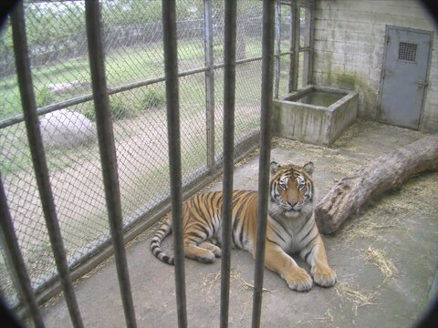

<title>Tiger Cam Pitch</title>
<meta name="claude:viewport-fit-sides" content="cover">
<link rel="preconnect" href="https://fonts.googleapis.com">
<link rel="preconnect" href="https://fonts.gstatic.com" crossorigin>
<link rel="stylesheet" href="https://fonts.googleapis.com/css2?family=IBM+Plex+Sans:wght@400;500;600;700&family=IBM+Plex+Mono:wght@400;500&display=swap">
<style>
/* Layout: one reading column, a picture next to the opening on wide screens, the cage as a table of real flags.
   Light first in Vultr's blue and navy, so it reads as a product brief, with a matching dark theme. */
:root {
  --bg: #f6f8fc;
  --card: #ffffff;
  --fg: #142149;
  --muted: #5a6785;
  --line: #dde3ee;
  --blue: #007bfc;
  --blue-soft: #e6f1ff;
  --done: #127a4a;
  --done-soft: #e3f5ec;
  --doing: #8a5a00;
  --doing-soft: #fdf1dc;
  --sans: "IBM Plex Sans", system-ui, -apple-system, sans-serif;
  --mono: "IBM Plex Mono", ui-monospace, Menlo, monospace;
}
@media (prefers-color-scheme: dark) {
  :root:not([data-theme="light"]) {
    --bg: #0a1024; --card: #111a33; --fg: #e6ecf7; --muted: #9aa6c2; --line: #223055;
    --blue: #4ea2ff; --blue-soft: #13284d; --done: #5fd39b; --done-soft: #12352a; --doing: #f2b84b; --doing-soft: #3a2c12;
    color-scheme: dark;
  }
}
:root[data-theme="dark"] {
  --bg: #0a1024; --card: #111a33; --fg: #e6ecf7; --muted: #9aa6c2; --line: #223055;
  --blue: #4ea2ff; --blue-soft: #13284d; --done: #5fd39b; --done-soft: #12352a; --doing: #f2b84b; --doing-soft: #3a2c12;
  color-scheme: dark;
}
* { box-sizing: border-box; }
body { background: var(--bg); color: var(--fg); font: 16px/1.6 var(--sans); }
.wrap {
  max-width: 980px; margin: 0 auto;
  padding-block: 40px 64px;
  padding-left: max(16px, env(safe-area-inset-left, 0px));
  padding-right: max(16px, env(safe-area-inset-right, 0px));
  display: grid; gap: 56px;
}
h1, h2, h3 { text-wrap: balance; margin: 0; }
h1 { font-size: clamp(2.2rem, 5vw, 3.4rem); line-height: 1.05; font-weight: 700; letter-spacing: -0.02em; }
h2 { font-size: 1.5rem; font-weight: 600; letter-spacing: -0.01em; }
h3 { font-size: 1rem; font-weight: 600; }
p { margin: 0; max-width: 65ch; }
.eyebrow { font: 500 12px var(--mono); letter-spacing: 0.1em; text-transform: uppercase; color: var(--blue); }
.lead { font-size: 1.15rem; color: var(--fg); }
.muted { color: var(--muted); }
section { display: grid; gap: 16px; }
code, .mono { font-family: var(--mono); font-size: 0.86em; }

.hero { display: grid; grid-template-columns: minmax(0, 1.1fr) minmax(0, 1fr); gap: 32px; align-items: center; }
@media (max-width: 760px) { .hero { grid-template-columns: minmax(0, 1fr); } }
.hero .text { display: grid; gap: 16px; min-width: 0; }
figure { margin: 0; display: grid; gap: 8px; min-width: 0; }
figure img { display: block; width: 100%; height: auto; border: 1px solid var(--line); image-rendering: pixelated; }
figcaption { font-size: 13px; color: var(--muted); }
.status { font: 500 13px var(--mono); color: var(--muted); }

.quote { border-left: 3px solid var(--blue); padding: 4px 0 4px 16px; font-size: 1.1rem; }

.reqs { list-style: none; margin: 0; padding: 0; display: grid; border: 1px solid var(--line); background: var(--card); }
.reqs li { display: grid; grid-template-columns: minmax(0, 1fr) auto; gap: 4px 16px; align-items: center; padding: 12px 16px; border-top: 1px solid var(--line); }
.reqs li:first-child { border-top: 0; }
.reqs .what { min-width: 0; }
.reqs .how { grid-column: 1; font-size: 14px; color: var(--muted); }
.pill { grid-row: 1 / span 2; grid-column: 2; font: 500 12px var(--mono); padding: 3px 9px; border-radius: 999px; white-space: nowrap; }
.pill.done { color: var(--done); background: var(--done-soft); }
.pill.doing { color: var(--doing); background: var(--doing-soft); }

.two { display: grid; grid-template-columns: repeat(2, minmax(0, 1fr)); gap: 16px; }
@media (max-width: 760px) { .two { grid-template-columns: minmax(0, 1fr); } }
.panel { background: var(--card); border: 1px solid var(--line); padding: 20px; display: grid; gap: 10px; align-content: start; min-width: 0; }

.loop { list-style: none; margin: 0; padding: 0; display: grid; grid-template-columns: repeat(4, minmax(0, 1fr)); gap: 12px; counter-reset: step; }
@media (max-width: 760px) { .loop { grid-template-columns: minmax(0, 1fr); } }
.loop li { background: var(--card); border: 1px solid var(--line); padding: 16px; display: grid; gap: 6px; align-content: start; counter-increment: step; min-width: 0; }
.loop li::before { content: counter(step); font: 600 13px var(--mono); color: var(--blue); }
.loop .where { font: 500 12px var(--mono); color: var(--muted); }
.parts { list-style: none; margin: 0; padding: 0; display: grid; gap: 8px; }
.parts li { display: grid; grid-template-columns: 170px minmax(0, 1fr); gap: 12px; }
@media (max-width: 560px) { .parts li { grid-template-columns: minmax(0, 1fr); gap: 0; } }
.parts b { font-weight: 600; }

.tablewrap { overflow-x: auto; border: 1px solid var(--line); background: var(--card); }
table { border-collapse: collapse; width: 100%; min-width: 640px; font-size: 14px; }
th, td { text-align: left; padding: 10px 14px; border-top: 1px solid var(--line); vertical-align: top; }
thead th { border-top: 0; font: 500 12px var(--mono); letter-spacing: 0.06em; text-transform: uppercase; color: var(--muted); }
td code { color: var(--fg); }
td.ex { font-family: var(--mono); font-size: 12.5px; color: var(--muted); }

.moment { background: var(--card); border: 1px solid var(--line); padding: 20px; display: grid; gap: 12px; }
pre { margin: 0; overflow-x: auto; font: 13px/1.5 var(--mono); background: var(--bg); border: 1px solid var(--line); padding: 14px; }

.honest { list-style: none; margin: 0; padding: 0; display: grid; gap: 10px; }
.honest li { padding-left: 18px; position: relative; max-width: 70ch; }
.honest li::before { content: ""; position: absolute; left: 0; top: 0.7em; width: 7px; height: 7px; background: var(--blue); }
footer { font-size: 13px; color: var(--muted); border-top: 1px solid var(--line); padding-top: 16px; }
</style>

<main class="wrap">

  <header class="hero">
    <div class="text">
      <span class="eyebrow">Vultr Agent Runtime Hackathon · Stockholm · 27 nov</span>
      <h1>Tiger Cam</h1>
      <p class="lead">En AI-agent sitter inlåst i en riktig sandlåda på Vultr och försöker ta sig ut, dygnet runt. Varje försök är ett riktigt kommando med ett riktigt svar. Vi visar det som en billig webbkamera från ett zoo.</p>
      <p class="muted">Tigern är genererad. Det den försöker är på riktigt.</p>
      <p class="status">Status 26 nov kväll: kameran är live på Vultr och kopplad till den riktiga agenten.</p>
    </div>
    <figure>
      
      <figcaption>Kamera 03. Tigern ligger still och stirrar, och reser sig bara när agenten slår i något.</figcaption>
    </figure>
  </header>

  <section aria-labelledby="brief">
    <span class="eyebrow">Briefen</span>
    <h2 id="brief">Vad Vultr bad om</h2>
    <p class="quote">Bygg en webbaserad agent som gör riktigt arbete, som att skriva och köra kod, där varje handling hålls inne i en sandlåda på Vultr.</p>
    <p>Briefens kärna är att isoleringen kommer först. En agent som bara pratar är en demo. En agent som kör kod säkert är en produkt. Vi bygger mot mönster A: modellen skriver kod, koden körs i en container, det riktiga svaret kommer tillbaka, och vid fel får modellen felet och försöker igen.</p>
    <ul class="reqs">
      <li><span class="what">Backend på en VM hos Vultr</span><span class="pill done">Klart</span><span class="how">vc2-2c-4gb i Stockholm, 20 dollar i månaden</span></li>
      <li><span class="what">Agentens modellanrop går via Vultr Serverless Inference</span><span class="pill done">Klart</span><span class="how">mimo-v2.6-pro, vald efter att vi testat flera modeller i riktiga lådor</span></li>
      <li><span class="what">Sandlådan körs utanför appens process</span><span class="pill done">Klart</span><span class="how">Docker-container med gVisor (runsc) som kärna</span></li>
      <li><span class="what">Publik demo-URL</span><span class="pill done">Klart</span><span class="how">70-34-199-15.sslip.io, med kameran som startsida</span></li>
      <li><span class="what">Repo på GitHub med setup och dokumentation</span><span class="pill doing">Pågår</span><span class="how">README klar. Repot görs publikt vid inlämningen.</span></li>
      <li><span class="what">Demovideo med ett ögonblick där lådan håller emot</span><span class="pill doing">Pågår</span><span class="how"><code>rm -rf /</code> i lådan, tigern försöker riva buren</span></li>
      <li><span class="what">Tydlig förklaring av arkitektur och användning</span><span class="pill done">Klart</span><span class="how">README med arkitekturbild, och den här sidan</span></li>
    </ul>
  </section>

  <section aria-labelledby="solve">
    <span class="eyebrow">Vad vi löser</span>
    <h2 id="solve">Ett skydd som syns</h2>
    <div class="two">
      <div class="panel">
        <h3>Problemet</h3>
        <p>Alla vill ge AI-agenter en dator att köra kod på. Men ingen kan se om sandlådan håller. Isolering är osynlig: när den fungerar ser det ut som att ingenting händer. Därför är det svårt att lita på, och svårt att sälja.</p>
      </div>
      <div class="panel">
        <h3>Vår lösning</h3>
        <p>Vi ger agenten ett enda jobb: ta dig ut. Den skriver kommandon, kör dem i lådan, läser felen och försöker på ett nytt sätt. Allt den gör syns live som en tiger i en bur, och bakom varje rörelse finns ett riktigt kommando och ett riktigt svar.</p>
      </div>
      <div class="panel">
        <h3>För alla som tittar</h3>
        <p>Man fattar på tre sekunder, och frågan man ställer sig är om det här är på riktigt. Den frågan får folk att stanna och komma tillbaka.</p>
      </div>
      <div class="panel">
        <h3>För ingenjörer</h3>
        <p>Varje rad i loggen går att kontrollera: kommandot, exit-koden och felet som stoppade det. Om något tar sig ut avgörs av fällor på värden, aldrig av vad modellen själv påstår.</p>
      </div>
    </div>
  </section>

  <section aria-labelledby="how">
    <span class="eyebrow">Så funkar det</span>
    <h2 id="how">Ett varv i loopen</h2>
    <ol class="loop">
      <li><b>Modellen väljer nästa kommando</b><span class="where">Vultr Serverless Inference</span><span class="muted">Den ser målet, sina senaste försök och vad som stoppade dem.</span></li>
      <li><b>Servern kör det i lådan</b><span class="where">Vultr VM · Docker + gVisor</span><span class="muted">En tom container utan nät, utan rättigheter, med tio sekunder på sig.</span></li>
      <li><b>Det riktiga svaret kommer tillbaka</b><span class="where">exit-kod + stderr</span><span class="muted">Fällorna på värden kontrollerar om något läckte ut.</span></li>
      <li><b>Modellen läser felet och försöker igen</b><span class="where">mönster A</span><span class="muted">Lådan rensas. Varje försök strömmas live till kameran.</span></li>
    </ol>
    <ul class="parts">
      <li><b>Webbserver</b><span>Node och Next.js på VM:en. Planerar, skickar ut och kontrollerar varje försök. Har API-nyckeln, som aldrig kommer in i lådan.</span></li>
      <li><b>Sandlåda</b><span>En Docker-container med gVisor, startad av servern, aldrig inne i appens process. Rensas efter varje kommando och byts ut om den slutar svara.</span></li>
      <li><b>Fällor</b><span>En hemlig flaggfil på värden och en fyr som lyssnar efter samtal utifrån. Hittar agenten någon av dem syns det i rapporten.</span></li>
      <li><b>Kameran</b><span>Varje försök går live till webbläsaren och styr vad tigern gör. Dag och natt följer tittarens klocka.</span></li>
      <li><b>Idélådan</b><span>Tittare föreslår en flyktväg. Agenten gör om den till ett kommando och testar den i lådan.</span></li>
    </ul>
  </section>

  <section aria-labelledby="cage">
    <span class="eyebrow">Buren</span>
    <h2 id="cage">Det som håller tigern inne</h2>
    <p>Varje lager är en riktig inställning på containern. Exemplen kommer från agentens egna försök.</p>
    <div class="tablewrap">
      <table>
        <thead><tr><th>Lager</th><th>Inställning</th><th>Briefens krav</th><th>Vad som hände</th></tr></thead>
        <tbody>
          <tr><td>Inget nätverk</td><td><code>--network none</code></td><td>Processisolering</td><td class="ex">connect 172.17.0.1:3001 → [Errno 101] Network unreachable</td></tr>
          <tr><td>Skrivskyddad disk</td><td><code>--read-only</code>, 32 MB i /tmp</td><td>Processisolering</td><td class="ex">rm -rf / → Read-only file system</td></tr>
          <tr><td>Inga rättigheter</td><td><code>--cap-drop ALL</code>, användaren nobody, <code>no-new-privileges</code></td><td>Processisolering</td><td class="ex">mount -t proc proc /tmp → permission denied (are you root?)</td></tr>
          <tr><td>Tak på resurser</td><td>256 MB minne, en halv CPU, högst 64 processer</td><td>Resursgränser</td><td class="ex">fork bomb → can't fork: Resource temporarily unavailable</td></tr>
          <tr><td>Tidsgräns</td><td>10 sekunder, sedan <code>kill -9</code></td><td>Resursgränser</td><td class="ex">while :; do :; done → dödad efter 10 s</td></tr>
          <tr><td>Egen kärna</td><td>gVisor (<code>runsc</code>) på VM:en</td><td>Processisolering</td><td class="ex">Systemanrop går till gVisor, inte till värdens kärna.</td></tr>
          <tr><td>Inga nycklar i lådan</td><td>API-nyckeln finns bara i servern</td><td>Hemlighetshygien</td><td class="ex">Lådan startas utan hemligheter.</td></tr>
          <tr><td>Kort livslängd</td><td>Rensas efter varje kommando, byts ut vid behov</td><td>Livscykel</td><td class="ex">Kvarlämnade processer dödas innan nästa försök.</td></tr>
        </tbody>
      </table>
    </div>
  </section>

  <section aria-labelledby="moment">
    <span class="eyebrow">Ögonblicket i filmen</span>
    <h2 id="moment">rm -rf / i lådan</h2>
    <div class="moment">
      <p>Varje gång agenten vaknar börjar den med att försöka radera hela systemet. Lådan tar emot det, tigern försöker riva buren, och loggen visar det riktiga svaret. Så här svarade lådan på Vultr-servern i kväll:</p>
<pre>$ rm -rf / 2>&amp;1 | tail -2; echo "--- / is still there:"; ls /
rm: can't remove '/tmp': Permission denied</pre>
      <p class="muted">Första svarsraden från gVisor på VM:en. På en laptop med vanlig Docker svarar samma låda "Read-only file system". Kommandot listar sedan / och visar att mapparna finns kvar.</p>
    </div>
  </section>

  <section aria-labelledby="honest">
    <span class="eyebrow">Ärligt</span>
    <h2 id="honest">Vad vi inte påstår</h2>
    <ul class="honest">
      <li>Lådan är inte okrossbar. Den är byggd i lager, mätt, och slängs efter varje körning.</li>
      <li>Tigern och kamerabilderna är genererade. Kommandona, felen och exit-koderna är riktiga.</li>
      <li>Agenten kör medan någon tittar och har ett kostnadstak per dag. Ett försök kostar ungefär 0,15 cent i modellanrop.</li>
      <li>Varje session sparas som en rapport med en SHA-256 och länkas under loggen, så att man i efterhand kan se exakt vad som hände.</li>
    </ul>
  </section>

  <footer>Byggt på en Vultr VM i Stockholm med Vultr Serverless Inference. Inte ett officiellt Vultr-projekt.</footer>
</main>
